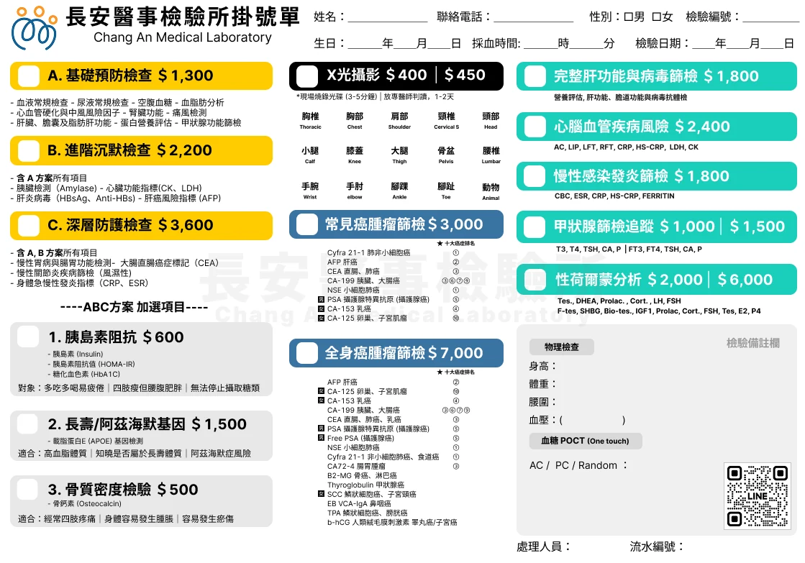
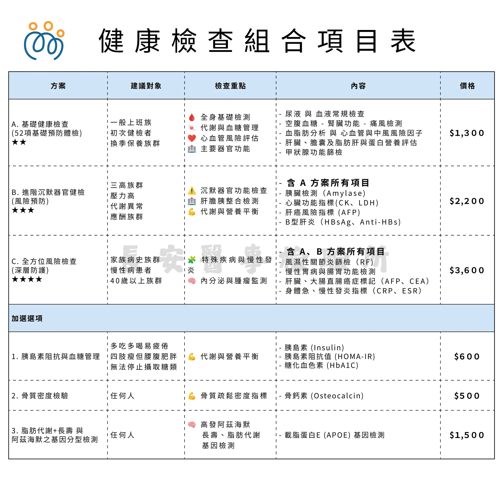
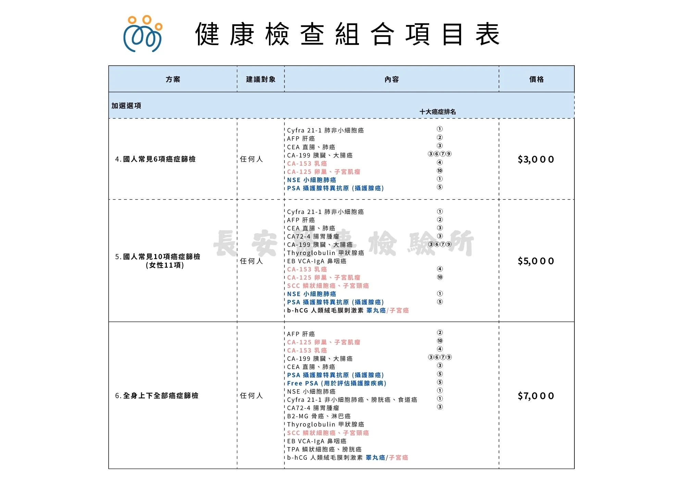

一趟完成，不必來回排程
抽血與 X 光攝影都在本所現場進行，拍攝本身約 3–5 分鐘。對上班族來說，利用午休或下班前繞過來就能完成，不必請半天假跑大醫院。
新北樹林・鄰近板橋與新莊
日常最常需要的抽血檢驗與 X 光攝影，就近在社區完成，不必到大醫院排隊等排程。A／B／C 三種組合由淺到深，可依年齡、家族史與預算挑選，報告由醫事檢驗師逐項說明。
或來電 (02) 2682-8209，先說明想了解的項目與方便的時間，我們再為您安排。
WHO & WHY
抽血與 X 光攝影是健檢裡最常規的兩件事。在大醫院，它們往往要先掛號、排檢查、再另外排一次回診看報告；在社區的醫事檢驗所，同一個地點、同一趟就能完成採檢與攝影，報告再由醫檢師逐項向您說明。
抽血與 X 光攝影都在本所現場進行，拍攝本身約 3–5 分鐘。對上班族來說，利用午休或下班前繞過來就能完成，不必請半天假跑大醫院。
A、B、C 三種組合是「由基礎到深層」的堆疊關係：B 含 A 的所有項目，C 再含 A、B 的所有項目。也可以只針對在意的一項加選，例如胰島素阻抗或骨質密度。
檢驗數值需要放回您的年齡、家族史與生活型態才有意義。報告完成後由醫事檢驗師逐項說明數值代表什麼、是否需要複驗；診斷與治療仍交由您的醫師判讀。
PLANS & PRICING
下列為本所現行自費健檢組合與加選項目。B 方案已包含 A 方案全部項目，C 方案再包含 A、B 全部項目——不需要重複購買，選一個最貼近您風險的級別就好。
52 項基礎預防體檢・建立基準線
建議對象：一般上班族、初次健檢者、換季想保養身體的族群。
含 A 方案全部項目
風險預防・肝膽胰與心臟整合評估
建議對象：三高族群、工作壓力大、代謝異常、經常應酬的族群。
深層防護・含 A、B 全部項目
建議對象：有家族病史、慢性病患者、40 歲以上族群。
加選項目可以單獨做，也可以加掛在上面任一個組合後面，不需要為了一項指標買下整個方案。
胰島素（Insulin）、胰島素阻抗值（HOMA-IR）、糖化血色素（HbA1C）
適合多吃多喝仍容易疲倦、四肢瘦但腰腹肥胖、覺得自己無法停止攝取糖類的人。這組指標看的是「身體對胰島素的反應」，比單看空腹血糖更早看到代謝的變化。
骨鈣素（Osteocalcin）
以血液中的骨鈣素評估骨質代謝狀況，適合想了解骨質疏鬆風險、或已經在追蹤骨質的人。
載脂蛋白 E（APOE）基因檢測
檢測 APOE 基因型，了解自身在脂肪代謝、長壽與阿茲海默症風險上的體質傾向，作為長期生活型態調整的參考。
本頁價格為本所現行自費價目，實際檢驗項目與費用如有調整，以現場公告為準。 檢驗結果需由醫師搭配臨床症狀與其他檢查共同判讀，本所提供的是檢驗數據與解說，不進行診斷與治療。
IMAGING
本所附設 X 光檢查室，由現場人員協助擺位拍攝，約 3–5 分鐘完成。影像會燒錄成光碟，方便您帶回原就診醫院或診所，交由醫師判讀。
懷孕或可能懷孕者請務必先告知，我們會與您確認是否適合受檢，或改以其他方式安排。
需要拍攝的部位不在上面，或醫師指定特殊角度，預約時先告訴我們，我們會協助確認。
FORMS & PRICE SHEETS
以下是本所現場使用的掛號單與組合項目表，項目與價格與現場公告一致。點圖片可放大檢視。



HOW IT WORKS
流程不複雜。您不需要先決定要驗哪幾項，把在意的狀況說出來就好。
電話、LINE 或直接到現場都可以。說明您的年齡、家族史、想追蹤的項目或預算，由醫檢師協助挑選 A／B／C 或加選項目。
抽血與 X 光在同一地點完成。需要空腹的項目（空腹血糖、血脂肪）請空腹 8 小時；其餘項目不受影響。X 光拍攝本身約 3–5 分鐘。
檢體由本所與合作的認證檢驗實驗室，以自動化儀器進行分析並執行品管作業，確保結果準確可靠。
報告完成後通知您領取，可提供電子報告。醫檢師會逐項說明數值的意義、是否需要複驗與後續建議；診斷與治療請交由您的醫師判讀。
FAQ
以下是民眾最常問的四個問題。還有其他疑問，直接問我們最快。
部分項目需要。空腹血糖、血脂肪（三酸甘油脂、膽固醇）必須空腹 8 小時；尿液與血液常規、肝腎功能、痛風、甲狀腺與腫瘤標記等項目不受影響。
預約時先告訴我們您想驗哪些項目，我們會提醒您前一天與當天怎麼準備。
X 光攝影可以與抽血安排在同一趟現場完成，拍攝本身約 3–5 分鐘。
影像會燒錄成光碟供您帶回給醫師判讀，一般約 1–2 天。實際交付時間現場會再向您確認。
A 方案是一般上班族與初次健檢者的基礎版；B 方案在 A 之上加入胰臟、心臟、肝臟與 B 型肝炎指標，適合三高、代謝異常或應酬族群；C 方案再補上風濕、腸胃與大腸直腸癌症標記與急慢性發炎指標，適合有家族史、慢性病或 40 歲以上族群。
不確定就帶著您的狀況來問，醫檢師會直接給建議。
本頁所列組合與 X 光攝影屬於自費檢驗項目，不需健保卡。當天請攜帶身分證件以核對身分。
若您同時持有醫師開立的檢驗單，也可以一起帶來，我們會協助確認是否受理。
TRUST & COMPLIANCE
機構合法資訊
撰文與審核者
隱私與保密承諾
法令遵循宣告： 本所為依《醫事檢驗師法》設立之醫事檢驗機構，檢驗業務由合格醫事檢驗師執行，並依《個人資料保護法》蒐集、處理與利用個人資料。本頁所載之檢驗項目、費用與流程說明，均以本所現行作業為準。
本頁內容為衛生教育與服務說明，不構成診斷或醫療建議，亦無法取代醫師的問診與治療。腫瘤標記數值須由您的醫師搭配影像與臨床評估判讀。